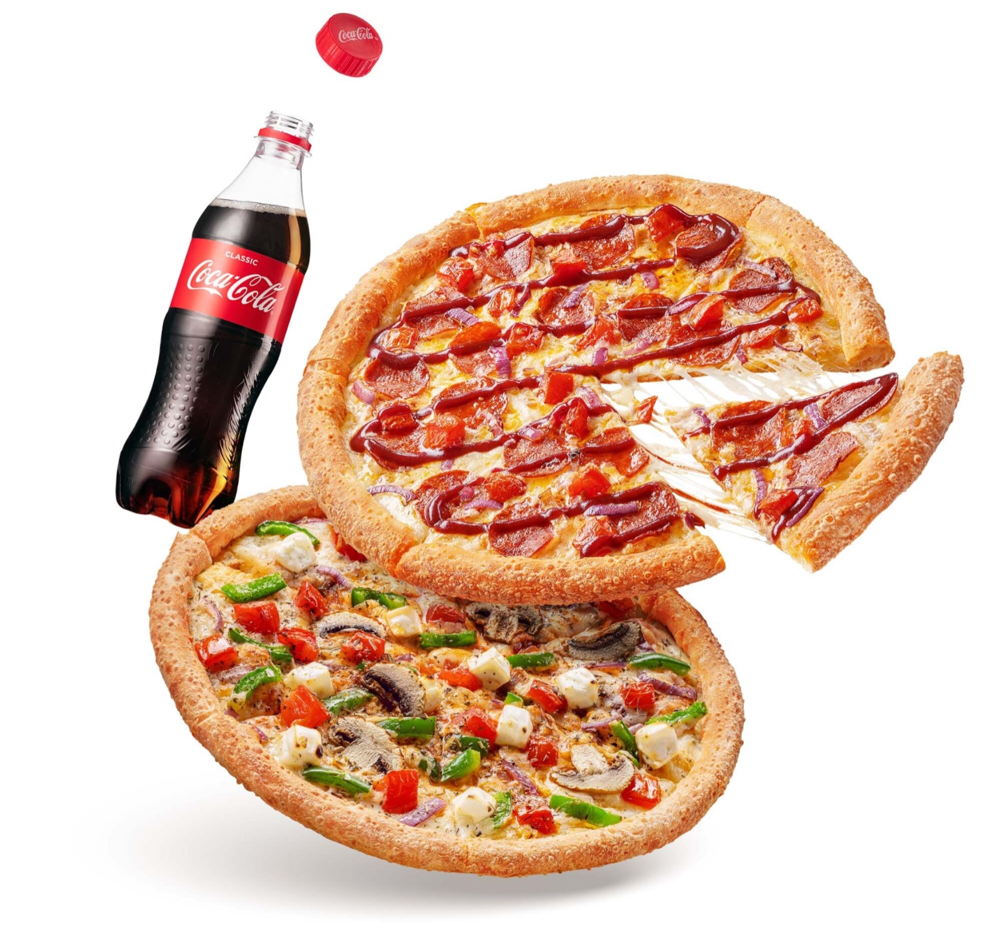
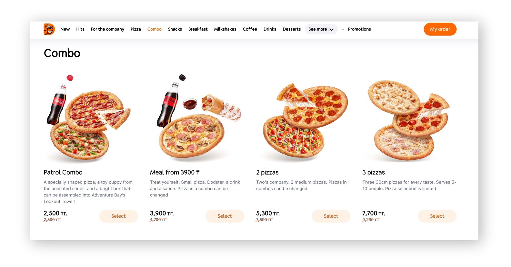
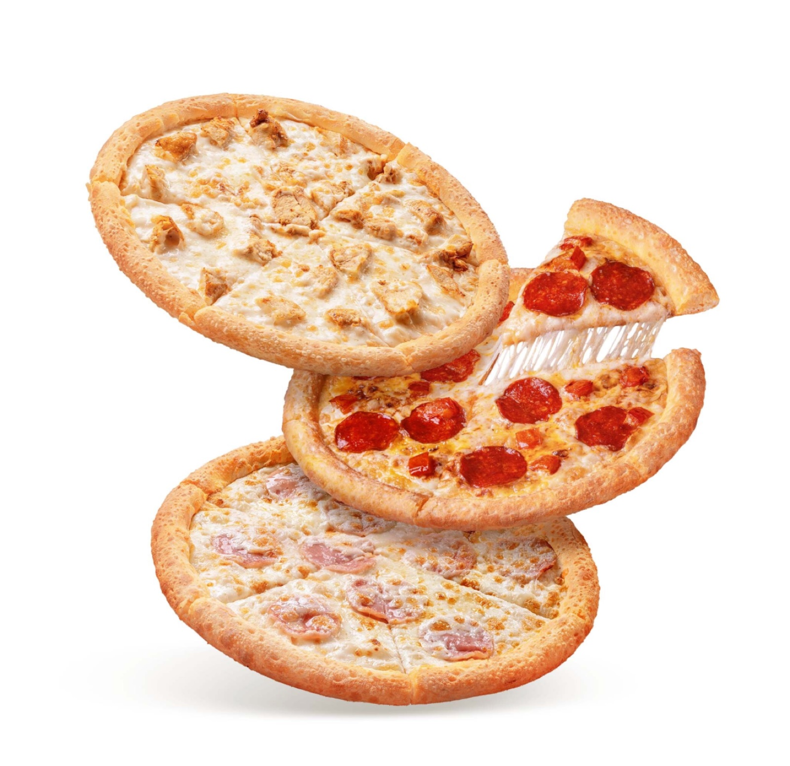
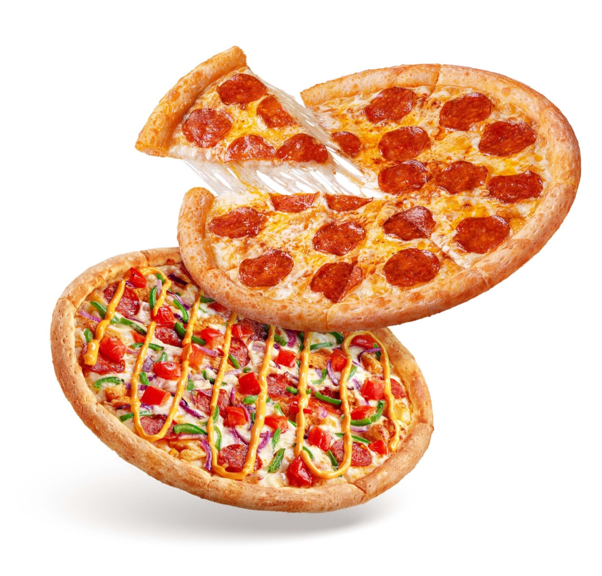
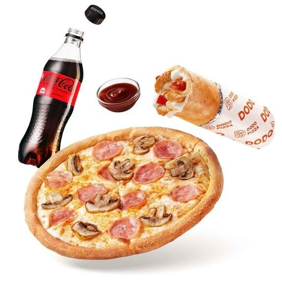

To make it easier for the client to understand the components of the combo, we created visual compositions for the website catalog. A combo is always a composition of products. For the visualization, we placed the products close to each other to visually convey the idea of a combo. At the same time, all the products needed to fit within the layout boundaries, while maintaining their integrity and recognizability.


During the process, it was essential to ensure consistent color correction and a unified light source. It was also important to make sure that all the products were proportionally accurate and appeared to "levitate" above the same plane.


Several teams were involved in the project: the photo lab, the retouching team, and a designer. For this project, I developed the concept and handled all communication to ensure the work was completed on time. During the project, I prepared references, held calls with the photo lab, and handed over the photos for retouching. The final images were received from the retouching team and prepared for publication on the website. The entire process took about two weeks.
